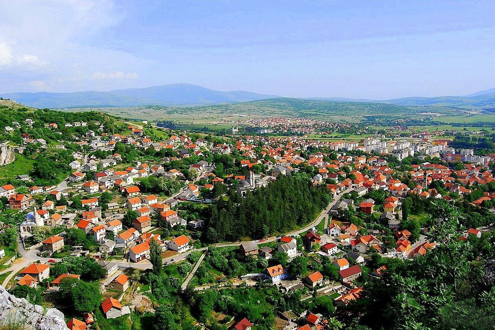

|  | Livno je grad u
jugozapadnom dijelu Bosne i Hercegovine.
Najznačajniji je grad u Hercegbosanskoj županiji, čije je kulturno i gospodarsko središte,
te je drugi po veličini grad s većinskim hrvatskim stanovništvom u Bosni i Hercegovini.
Grad leži na 724 m nadmorske visine na istoku centralnog dijela Livanjskog polja, većim
dijelom na obroncima i u podnožju brda Bašajkovac, iz kojeg izvire i krška rijeka Bistrica.
Klima je umjereno kontinentalna s jakim vjetrovima. Prosječna godišnja temperatura
zadnjih 57 godina (1951. - 2008.) iznosi 9,3°C. Ljeta su mahom duga i sunčana (2008: 2.474 sati),
zime snježne. |
Pročitajte više na Wikipedia. |